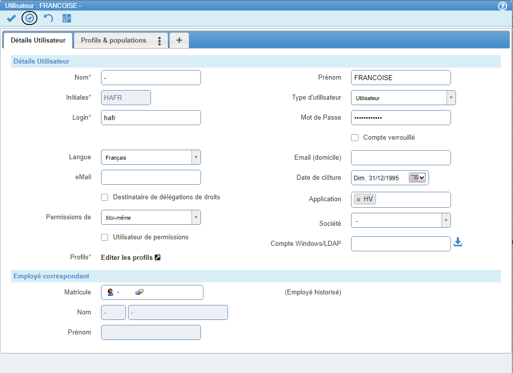
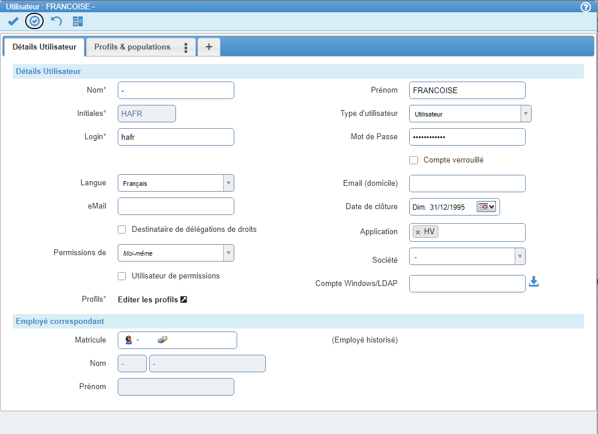

Mes expériences professionnelles
Lors de ma formation, j'ai eu la chance de pouvoir réaliser des stages dans deux formidables entreprises.
Dans mon cas, ces deux stages ont été d'excellentes expériences.
Le travail était très intéressant et mon environnement de travail était très agréable.
Mon premier stage s'est passé dans l'entreprise ESIG située à Horbourg-Whir lors de ma première année de BTS.
L'entreprise
Bien que cette entreprise soit petite, elle gère la plupart des parcs informatiques de la région que ce soit dans les mairies ou dans les entreprises plus conséquentes.
Mes tâches
Mon travail consistait à aider les techniciens à installer des postes de travail et à les préparer pour les clients.
J'ai eu la chance de pouvoir assister à des interventions sur site, ce qui m'a permis de voir comment cela se déroulait.
Ayant été particulièrement apprécié durant ces interventions, on m'a proposé de suivre de A à Z un projet majeur d'installation de parc informatique pour l'entreprise Colmar Frais.
Qu'est-ce que cela m'a apporté ?
Ce stage m'a permis de découvrir le monde de l'entreprise et de voir comment se déroulais le travail en équipe.
Il m'a également permis de passer une certification complémentaire, ingénieur Sophos.
J'ai réalisé mon second stage dans l'entreprise Incotec située à Illkirch-Graffenstaden.
Qui est Incotec ?
Incotec est une entreprise spécialisée dans la conception de logiciels de gestion et de planification.
Elle a notamment développé Incovar+, un logiciel de gestion de temps de travail et des activités.
Mes tâches
Mon travail consistait à modifier l'application Incovar+ afin de la rendre compatible avec les normes RGAA.
Pour ce faire, j'ai dû étudier les différentes vues de l'application, puis les modifier afin de les rendre accessibles aux personnes malvoyantes ou en situation de handicap.
J'ai donc dû changer de technologie et du recréer les menus afin d'activer la navigation au clavier et de rendre l'application compatible avec les lecteurs d'écrans.
De plus, j'ai vérifié et modifier les contrastes de couleurs afin de les rendre plus lisibles.
 

Qu'est-ce que cela m'a apporté ?
Ce stage m'a permis de découvrir le monde du développement en entreprise et d'apprendre à utiliser tous les outils à la disposition d'un développeur.
J'ai également découvert les normes RGAA et comment les appliquer.
Enfin, j'ai pu trouver une alternance pour ma suite d'études.